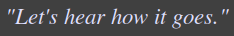
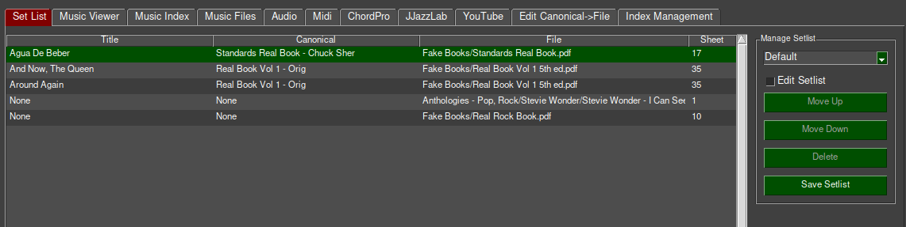
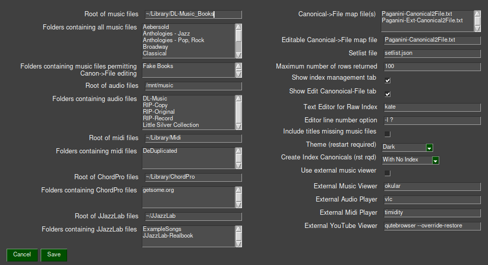
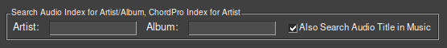
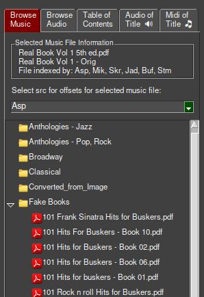
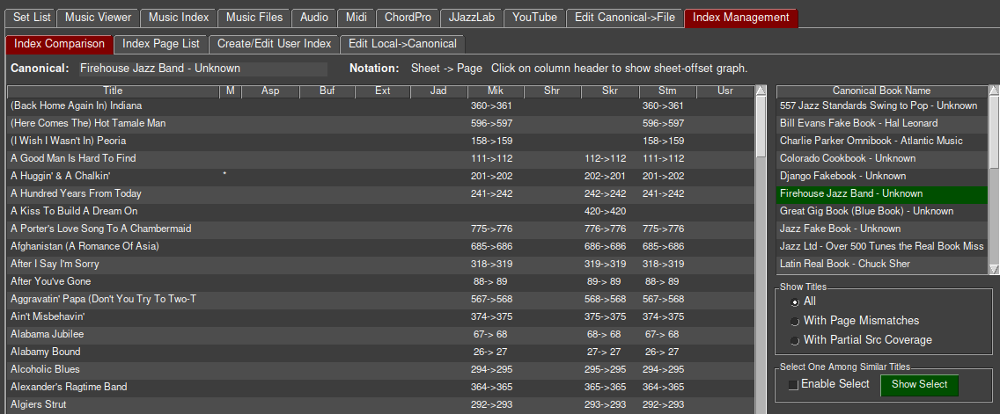
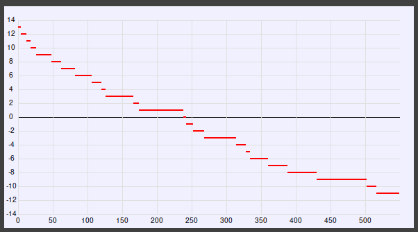
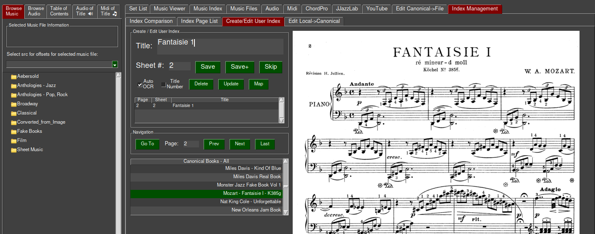
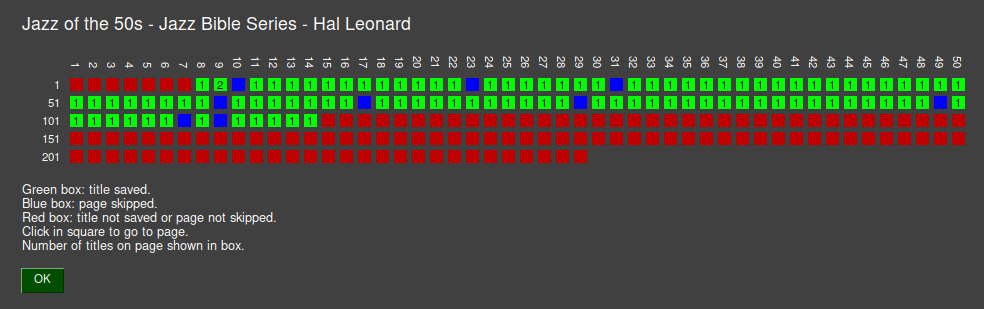
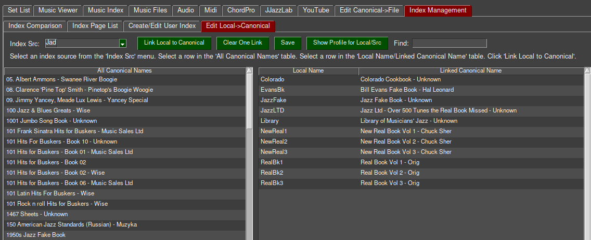

Birdland Musician’s Assistant¶
Birdland is a Linux-based multimedia music viewer and library manager for music books in PDF form including fakebooks. It displays a page of music or a ChordPro song by searching a database of titles and other metadata. Answering the Let’s hear how it goes query it also suggests audio files, midi files, JJazzLab songs and YouTube links matching the search.
A secondary feature of Birdland is index management. Birdland contains tools to quickly create indexes using OCR, harmonize indexes from disparate sources, compare them, and integrate them into one database. Birdland ships with index data from 9 sources covering over 100 books and over 20,000 titles. Users can edit existing indexes and add their own.

Terminology¶
Music vs Audio¶
The common (and ambiguous) terms - music and audio - are used formally here. You look at Music; you listen to Audio. That is, Music is derived from the printed page, Audio from performance. The term Book is used informally to refer to a Music book.
Raw Indexes¶
A key feature of Birdland is the ability to locate title in a book by searching a database. This requires an index that maps song titles to pages in PDF files. Birdland ships with raw indexes compiled from several online sources, one extracted from the table of contents of a collection of music books (of those having a table of contents) and a small one created during testing.
Each raw-index source has a short, three character identifier called Src. Each raw-index source also has a longer, descriptive identifier called Source though that has less visibility than Src.
Music Book Identifiers¶
Every music book has three identifiers. The Local Name is specific (or local) to each raw-index source and created by the person compiling the index. Local names are often cryptic and non-unique across different index sources.
The Canonical Name is descriptive, is unique over all music books, and was selected by author of Birdland. It is typically the same or similar to the name of the book, possibly normalized and disambiguated, particularly for for Real Books from Sher, Hal Leonard and the originals from Berkeley Music College. The local name is mapped to the canonical name by a file, Local2Canon.txt, in each of the raw-index source directories.
The File Name is the name of the music file, i.e. the PDF file containing music, in
your music library.
The canonical name is mapped to the file name by a file, Canonical2ile.txt in the configuration directory.
Birdland includes a tool for managing that file or you can use your favorite text editor.
The Canonical2File.txt file must exist before Birdland can find your music files.
Page Number, Sheet Number, Title Number¶
Two common (and also ambiguous) terms, Page and Sheet, are also used formally here.
The Page Number of a title exists within the domain of a PDF file and what is shown by PDF readers. Page numbers are sequential starting with one, have no gaps, and increase by one for each page in a book. (Internally, page numbers start at zero but that’s hidden from the user.) Some PDF files have non-numeric page numbers (yes, an oxymoron), often for front matter. Birdland does not deal with non-numeric page numbers.
The Sheet Number of a title is usually what is shown on the visual page. In the general case Page and Sheet numbers are not the same and vary by raw-index source.
Sheet numbers increase monotonically, there is only one per page, they are assigned for continuation pages, and they may have gaps, for example, because of omitted photos.
A small number of books identify titles with a Title Number instead of a Sheet Number. Title Numbers increase monotonically, there can be one or more per page, they are not assigned to continuation pages, and they may have gaps, for example, because of a structured title numbering system.
The relation between Page and Sheet (or Title) numbers is established by a file named Sheet-Offsets.txt in each of the raw-index source directories. It contains one or more pairs of numbers. Starting at the sheet represented by the first number the Page number is obtained by adding the second number to the sheet number. For some index sources the Page number and Sheet number are the same.
The distinction between Sheet Number and Title Number exists only for creating new indexes. It controls the automatic incrementing of the sheet/title number when skipping a page and displaying a nastygram when a sheet/title number is not given.
The indexes included with Birdland but which were obtained from external sources are inconsistent in sheet numbering and none make use of title numbering. For some, the page and sheet numbers are the same but the sheet numbers do not agree with the printed page. For others, the sheet number is offset from the page number and do agree with the printed page. The benefit of title numbering only accrue when creating new indexes with Birdland.
Editorial - We assert that Sheet Number, not Page Number, should be published in raw indexes. The sheet number is constant, as fixed as the ink in the book, whereas the page number is not. Different people doing scans may have different approaches to front matter, photos, back matter, etc., resulting in multiple incompatible scans. A small, simple offset file, not an entirely new index, brings those divergent scans into agreement. And the sheet number can be used to locate a title in a physical book whereas the page number cannot.
Foundational Concepts¶
No Copyrighted Media¶
Birdland ships with no copyrighted media - music, audio or midi. You must supply your own media, which is available from many online sources, or from your own scans. It does include music indexes for many popular books. Indexes are lists of facts and, as such, not subject to copyright.
Text-based Primary Input Files¶
The primary input files - raw indexes, local to canonical maps, canonical to file map, title corrections, etc., are all text-based. Birdland include tools for editing most or you may use your favorite text editor.
A corollary of this is that no user input is stored only in the Birdland database. The database may be rebuilt freely without the loss of data you have entered.
Multiple Raw Indexes¶
By comparing indexes from multiple sources it is possible to identify incorrect sheet numbers, alternate title spellings, and omitted titles. Of course, this is only meaningful if the sources were built independently, which does not appear to always be the case. And, of course, this only works when multiple sources exist. A book with only one index source may have error that can only be identified by viewing each page.
At some point, we’re not there yet, but at some point all index sources will agree. When we get there then there will no longer be a need for multiple raw indexes. Instead, we will consolidate all indexes into one and ship only that one with Birdland. We will also normalize all sheet numbers to agree with the printed sheet and include an offset file to map to PDF page. We hope users will contribute to this effort.
Normalized Titles¶
Titles for the same song in the raw indexes vary in several ways: capitalization, spelling errors, differences in punctuation, inclusion of subtitles, leading or trailing articles A and The, possibly in parens, key signatures, diacritical marks, certain source-specific quirks such as leading or trailing items, and more.
Ideally, there would only be one representation for each title. We’re not there yet but
Birdland includes the tools to move in that direction. At an early step in raw-index processing
Birdland checks each title against sixteen patterns of potential mismatches including those described above and automatically corrects to a normalized form.
Using one of the tools in Index Management users can manually add corrections that cannot be done automatically. Those corrections are then applied on a subsequent raw-index processing step.
Punctuation in the raw index is preserved in the database so that the displayed titles appear the same as the printed titles. However, punctuation is generally ignored when searching.
Screen Size¶
Development of Birdland was done on both a desktop PC with a large monitor and a laptop with a 13.25” screen and resolution of 1366x768. The layout of the graphical user interface was designed to fit on the laptop screen though at that size the built-in PDF viewer is barely usable - an external one using the full screen height is a better choice. The laptop screen also constrained the number and placement of UI features including buttons, textboxes, and tabs. We believe the compromises required to support smaller screens will be appreciated by some users.
Programming is More Fun Than Bookkeeping¶
Index management involves a lot of bookkeeping, e.g. identifying page mismatches between index sources, aligning page numbers, editing mapping files, etc. The time to develop the Birdland tools to minimize the bookkeeping effort likely exceeded many fold the time to just do the bookkeeping manually. But it was more fun.
Features¶
Music Viewer Features¶
Locate music by searching for the song title, composer or lyricist in the music index, the title in the music index matching the artist or album in the audio index, and the the title in the music filename.
Locate audio by searching for the song title, artist, and album in data extracted from metadata in the audio files. Audio file names are not searched because they normally overlap the metadata. The titles obtained from searching the audio index may optionally be included in a search of the music index. This provides a means of identifying titles by artist and album metadata, which is in the audio files index but not in the music file index.
Locate midi by searching for the song title in the midi filename. Midi files contain no reliable and uniform metadata so only the filename is searched.
Locate ChordPro songs by searching for the song title and artist in data
extracted from the ChordPro file and folder names. Presently no metadata is extracted from the ChordPro file content.Locate JJazzLab songs by searching for the song title the in data extracted from the JJazzLab filenames. Presently no metadata is extracted from the JJazzLab file content.
Locate YouTube pages by searching a table created by looking up all titles in the authors library.
Manage setlists.
Edit the Canonical to File table.
Option to use built in PDF viewer or external one.
Index Management Features¶
Compare indexes from multiple sources. View the title indicated by sheet number of each source to determine the correct one. Go directly to the line in the raw index to edit incorrect titles or sheet numbers. Harmonize alternate title spellings by selecting one from two or more alternate choices.
Inspect the raw index for each Src and Local book name and view the title to establish correct sheet offsets.
Create an index for a book not previously indexed. Workflow-optimized user interface with user-guided title OCR. Automatic title OCR where titles are in the same location on successive pages. Automatic sheet number increment.
Where the song titles are clearly legible, i.e., not written over a staff lines as is the case in some of the Real Books, and especially if they are in the same location on all pages, it is possible to index a book quickly with user input only to enter the first sheet number and correct OCR errors.
Edit the Local to Canonical file for each Src and Local book name.
Screen magnifier for viewing small sheet numbers when creating an index.
Other Features¶
Birdland uses the Sqlite3 database by default but will use MySql via a command-line option. To use MySql you must first manually create a MySql database called Birdland with appropriate permissions. Thereafter, Birdland will create and populate the tables just as it does with Sqlite3.
Support for use on multiple hosts using a shared configuration file with host-specific sections for settings likely to vary by host.
Installation¶
Download¶
For early releases Birdland is only package for access from GitHub or as a tar file. Disregard all else below. The PyPi, PyInstaller, and Nuitka packages were built successfully earlier in the development cycle. The software used to build PyPi package and the Birdland folder structure both changed incompatibly since then. In the interest of a timely release PyPi installation is not presently supported. The PyInstaller and Nuitak packages are huge, around a gigabyte. That size is not justified by the benefits of a self-contained package so self-contained packages are also not presently supported.
Birdland is packaged in several forms:
As a tar file. This is likely to be familiar to techy users but does nothing automatically. You will have to be sure Python and all required Python modules are installed.
At GitHub. This is essentially the same as the tar file above.
For installation via PyPi. This is also likely to be familiar to techy users and automatically installs all require Python modules.
As as self-contained file build by PyInstaller.
As as self-contained file build by Nuitka. These are likely to be the easiest to install as they include the Python interpreter and all required modules but they still require a recent glibc and the download files are quite large.
See the Birdland web site for download links and package-specific instructions. The package-specific instructions (one of ReadMe-Tar.md, ReadMe-Pypi.md, ReadMe-Nuitak.md, and ReadMe-PyInstaller.md) are also included in the installation package for reference during installation.
System Requirements¶
Birdland is presently supported on Linux.
Application Packages¶
The package name and process for installing these is specific to Linux distributions (Ubuntu, Mint, Arch, etc.) and not/barely documented here.
Birdland requires the Python 3 interpreter. This is likely installed on most modern Linux distributions. It will have to be installed for clone/download from GitHub, Tar distribution, or PyPi. It is included in the self-contained packages.
Tesseract - if using the Create Index feature. On Ubuntu this is in the tesseract-ocr package. On arch it is in tesseract.
Python Modules¶
Birdland requires the following Python modules. These are installed automatically if installing Birdland from PyPi, are included in the self-contained package, but have to be installed manually when installing Birdland from GitHub or the Tar file.
click
configobj
Levenshtein
mutagen
mysqlclient
pandas
pillow (only if using Create Index feature)
PyMuPDF
PySimpleGUI
pytesseract (only if using Create Index feature)
tk
unidecode
youtube-search-python (only to run get-youtube-links.py)
Fullword¶
Birdland includes the source and binary for one module, fullword (a misnomer of fulltext), written in C but falls back to an alternate match strategy if that is not available. There are presently no build instructions in the installation process to recompile that if the existing binary is incompatible with your system. Execute run.sh in the Fullword-Match directory under the birdland source directory if you have a C-development environment on your system.
Media Viewers/Players¶
Birdland optionally need one or more of the following if you want to view or hear the related files from your libraries.
An audio file player to play audio files matching a music title. We have tested with the vlc audio player.
A PDF viewer if you prefer to use an external one in lieu of the built-in one. We tested with the okular PDF viewer though we generally use the build-in viewer.
A midi player to play midi files. We tested with the timidity midi player with the FluidR3_GM.sf2 sound fount. The FluidR3_GM.sf2 sound font has good coverage of General Midi instruments and remarkably good samples.
ChordPro viewer to view ChordPro files. We tested with the chordpro ChordPro viewer.
JJazzLab to work with JJazzLab files. No choice here but JJazzLab.
A web browser for viewing YouTube links.
We like the qutebrowser browser for its simple, non-distracting user interface.
Status¶
A wise sage posited that Perfect is the Enemy of Good. With that in mind we decided to release Birdland with a few known issues to expose it to a wider user base.
At this stage in development and packaging, especially packaging, Birdland will be more attractive to techy users.
The Birdland application has been reasonably well tested during development but has not yet been exposed to many users. Corner cases or un-anticipated inputs and sequence of inputs will inevitably emerge.
Development and testing was done on an up-to-date Arch Linux system with the Plasma (KDE) desktop environment. Incompatibilities with other Linux distributions or older versions of Python and Python modules, and other system software are possible. Conflicts with the glibc library are specifically a concern with the self-contained packages.
The consolidation of the multiple index sources is not complete. The correct page is found for most titles in popular fakebooks but some page errors and alternate spellings of titles remain.
Birdland has a theme option but light themes are discouraged. Most of the testing was done with the Dark theme - we recommend that for early users. Birdland specifies a few user-interface colors that work better with dark themes. No work has been done yet to adapt the specified colors to light themes. Most embarrassing, the Birdland title just about disappears with light themes. While color is used sparingly in most of the user interface (just the title, input boxes, and tabs) it is used in the Create Index feature to convey the source of the title, either manual, manual OCR, or automatic OCR.
The power of Full Text searching is available only if using the MySql database. Since most, if not all, users will prefer Sqlite3 for its simplicity and speed, MySql full text serching is not possible. We were unable to use the full text feature of Sqlite3 either because it is buggy, we didn’t understand it, or both. However, we did implement approximations of full text in a number of different ways. By default, Birdland uses a small C-language routine for full-text matching. Because of the uncertainties of access to that routine in some environments Birdland will fall back to an alternate implementation using SQL LIKE matching if the C implementation cannot be loaded. There will be small variation in search results between the two implementations and LIKE is a bit slower.
Troubleshooting¶
Fitz Module Conflict¶
Birdland imports the fitz module, which is installed via the PyMuPDF pacakge. Another fitz module exists, which is installed with the fitz package. These cannot coexist on the same system without conflict. To run Birdland you will have to remove the fitz package. See:
https://github.com/pymupdf/PyMuPDF/issues/523
PySimpleGUI¶
The PySimpleGUI Python module requires both tk and tkinter. On some Linux distributions tk and tkinter are installed automatically when you install PySimpleGUI. If that is not the case for the distribution you are using then you will have to install in manually. For example, on Ubuntu and Ubuntu-like systems:
sudo apt-get install python3-tk
Kate Editor¶
If you have specified the kate editor for the Text Editor for Raw Index (our preference for this) then a recent update to kate broke the line-number option. It works fine if you also specify the column number. Thus the value for the Editor line number option for kate is:
-l ? -c 1
Getting Started¶
Settings¶
When Birdland starts for the first time it:
Creates a folder, .birdland, in your home directory (and also as specified by the -c confdir option, if given).
If using Sqlite3 (the default case if MySql is not specified) it creates an empty database in ~/.birdland/Birdland.db.
It populates the default or specified configuration directory with:
A default configuration file, birdland.conf
An empty setlist file, setlist.json
An empty canonical to file map file, hostname-Canonical2File.txt
A sample canonical to file map file, Example-Canonical2File.txt
An empty audio index, hostname-Audio-Index.json.gz,
Note that hostname above is the name of your host. The hostname is included in the canonical to file and audio index filenames so you can run Birdland on multiple hosts with a common, shared configuration directory, each with different music and audio libraries.
Birdland then prompts you set up your configuration in the settings menu: File->Settings. The birdland.conf file is an ordinary text file, which you can edit it directly with a text editor if you prefer.
There you tell Birdland the location of your music, audio, midi, ChordPro and JJazzLab libraries. Each of these is specified by a root directory and a list of one or more directories under the root.
Birdland needs to know the mapping between the canonical music file names used in the index and the names of the music files on your system. You can populate the canonical-to-file map file using the build-in tool in the Edit Canonical->File tab or with a text editor. The file consists of one line per music file containing the canonical name and the music file name separated by a vertical bar. A reasonably-complete example is in Example-Canonical2File.txt to use as a starting point. You may find that the file names in that are quite close to your music file names and only minor edits are needed. Or you might prefer to change the names of your music files to match that file.
Next click Database->Scan Audio Library if you intend to include your audio library in the Birdland database. This can take some time if you have a large audio library, perhaps around a half-hour for a half-terabyte of audio files. You can defer this until later if you are anxious to get started. Birdland gives you chance to cancel the scan if you accidentally click this item.
Finally click Database->Rebuild All Tables to build the database from the index data shipped with Birdland and the additional data you entered above. This typically takes thirty seconds or so.
There are several more options that are not needed to get started. We’ll get to those later.
Operation¶
Enter a title in the green text box labeled Title and hit Enter or click Search.
Birdland searches for all the words entered in the order they appear. This is similar, but not identical, to full text supported by MySql and Sqlite databases.
Birdland searches for the title in the music index, the audio index, in the music filenames, the midi filenames, the ChordPro index, the JJazzLab index and the YouTube index and activates the tab for the first match found in the above order.
Click on a row in the Music Index tab to view the music file found by title (or other search parameters), the Audio Index to play the audio file, the Music Files tab to view the music file found by filename, the Midi Files tab to play the midi file, the ChordPro tab to view the ChordPro file, the JJazzLab tab to launch JJazzLab for the title, and the YouTube Index to view the YouTube video for the title.
The number of matches of each type appears in Status Bar at the bottom of Birdland. Note that the maximum of number of matches returned is limited by an options in Settings, default 100.

And now, the multimedia feature manifests. If a speaker icon appears in the Status Bar then the title of an audio file matches the title shown in the music viewer. Click on the Audio of Title tab in the left sidebar and then a line in the Title/Artist table to play the audio.
If a music notes icon appears in the Status Bar then the above applies but for midi files
Add a title to a set list by clicking the Add button in the Add Title to Setlist panel. Create a new set list by typing the new name in the drop-down menu in lieu of selecting an existing one.

Abbreviated Reference Manual¶
UNIX Programmer’s Manual, Seventh Edition (now 43 years old) includes the following comment:
Within the area it surveys, this volume attempts to be timely, complete and concise. Where the latter two objectives conflict, the obvious is often left unsaid in favor of brevity.
In that spirit the function of most the user menus and controls should be self-explanatory from the tab, button, or panel labels. Here are just a few items that may not be obvious for reference while using Birdland.
Command Line¶
Birdland is executed from the comand line with birdland and it may appear in the system menu if supported.
-c confdir¶
Use confdir for the configuration directory instead of the default ~/.birdland. You may want to do this to locate the configuration information in a shared or cloud-based directory such as Dropbox so that you can use the same configuration information on multiple systems and so that it is backed up.
This option does not affect the location of Sqlite3 database, which is always in ~/.birdland. It can be easily and quickly regenerated and you may not want it in cloud storage because of its size.
-d mysql¶
Use the MySql database in lieu of the default Sqlite3 database.
Additional Commands¶
Birdland includes a few additional commands.
bl-build-tables (links to build_tables.py)
bl-diff-index (links to diff_index.py)
Ordinarily, the above are run via the menu in Birdland but are exposed for advanced users who prefer to run them outside of Birdland. These commands are not further documented. Use the –help option for some guidance on use.
Index-Sources/ExtractedIndex/extract-index-from-pdf.py - This scans your music library and extracts indexes from PDF files containing indexes.
build-pdf-from-image.py - This converts image files in your music library to PDF files and places them in the folder indicated by the music_from_image option in the configuration file, default the Converted_from_Image directory under the root of your music library. It assumes that all image files for a single song are in one folder and places the PDF output in a file named for that folder.
Menus¶

File->Settings¶

Folders containing music files permitting Canon->File editing¶
This was used to restrict the files in the Canonical Name table in the Edit Canonical->File tab to just files in the folders included in this option. It is not currently used.
Canonical->File map file(s)¶
This defines one or more files containing the canonical to file mapping. Presently, one map file was created by hand while the other was created by the program that built the Ext raw index by extracting index data from all PDF files in the music library containing an index.
Editable Canonical->File map file¶
Only the canonical to file map in this option is shown in the Edit Canonical->File tab. This is the file in the above option that was created by hand. There is no reason to edit the map created by the index extraction program and it cluttered the table.
Include titles missing in music files¶
When searching the music index titles without a corresponding music present are ordinarily excluded from the results shown in the Music Index. Check this option to include those files. You may want to do this to explore the music index before you have set up the canonical to file map for your music library.
Database¶
Rebuild Sheet-Offset Table, Rebuild Canonical to File Table¶
These items are a subset of Rebuild All Tables item. They are includes separately so users working on the Sheet Offset and Canonical to File files don’t have to rebuild the entire database when working on just those files.
Index Management¶
Process Raw-Index Sources¶
This executes each of the do_*.py scripts in the source-specific folders in the Index-Source directory. Each of those scripts converts their associated raw indexes into a consistent format in the Music-Index directory. It must be run after editing the raw index files. It does not have to be run after editing the Sheet Offset or Canonical to File files.
The remainder of the items show reports summarizing differences between index sources for the same book and another report showing the details of such differences. The summary reports show progress on harmonizing index sources and identify books needing attention. The detail report is redundant with the information on the Index-Management -> Index Comparison tab but some users might prefer to see the differences in a report.
View¶
The controls here are redundant with options in the Settings menu but are provided for users who want to quickly view one of the indicated tabs without going to Settings. Most users will have no need for Index Management and little need for Edit Canonical->File once they have configured Birdland for their system. Hiding these tabs reduces clutter and hides unused tabs.

Search and Search Controls¶

Also Search Audio Title in Music¶

The metadata accompanying some titles includes composer and lyricist but never artist and album as neither has a unique mapping to a title. Nevertheless, users may want to search for a title based on an artist who recorded it or an album where it appears. With this option checked and with a value for artist and or album the audio index is first searched for these items. The titles found in the search are then searched for in the music index as if they were entered in the Title: search box.
Browse Music¶
Title shown in the Music Index tab include the Src and Local for the raw index from which the title was obtained. That is not the case for books selected from the the Browse Music tab in the left sidebar, a file browser for all books in your music library. Select the index Src in the drop-down menu to use the associated index when viewing the book it in the Music Viewer tab.

Audio of Title, Midi of Title¶
As each title is displayed in the Music Viewer tab the audio and midi tables are searched for the title. Titles found there are displayed in the Audio of Title and Midi of Title tabs in the sidebar on the left of the window. Click on an item in either tab to immediately hear the song while viewing the music for it without the need to locate it in the Audio or Midi tabs.
Tabs¶
Edit Canonical->File¶
Unless your music library directory structure and book names matches that in *Example-Canonical2File.txt you will have to tell Birdland how to map canonical book names to your music files. This is done in the Edit Canonical to File Tab.

Click on a book in the Canonical Names table and a book in the Canonical Name / File Name table.
Click the Canonical to File button to link the selected canonical name to the file name.
Click Clear One Link to undo a link.
Click Save to save the table to the Canonical2File.txt file.
Presently there is no control on this tab to add a new canonical name or file name. This has to be done by manually editing the CanonicalNames.txt and Canonical2File.txt files.
Index Management¶
The material in this section is applicable only if you are working at the raw index level. This includes adding a new index source from an external source, correcting errors in the indexes shipped with Birdland, or creating an new index.
Many Birdland users will never deal with index management. For that reason you can hide the Index Management tab with an option in settings.
Here we use the term Left Click to indicate mouse button 1, and Right Click for mouse button 3. Apply the obvious correction if you have mapped your mouse buttons differently. The Right Click is often used for a quick view of a title in a pop-up window.

Index Comparison Tab¶
Here you compare the sheet number (and offset-mapped page number) for all Srcs covering all indexed books, correct errors in the raw indexes, and determine the offset between sheet and page.

Click in the Canonical Book Name table on in the column on the right to display all titles from that book and the sheet number and page number mapped from the sheet number for all Srcs covering the book.
Left click on a value in the Src-specific columns to view the page indicated by the number to the right of the arrow (the page number). Use this to identify pages with incorrect sheet numbers in the raw index.
Left Click on the column headers of the Index Comparison table to display a chart of the Sheet Offsets for Src indicated by the column header. This is pure eye candy and will likely disappear. Most of the fakebooks have a constant sheet offset. Only the Standards Real Book - Chuck Sher with a Src of Buf or Shr have an interesting chart. The original book included many photographs of performers but those sheets were omitted in the scanned PDF. The Buf and Shr indexes have correct sheet numbers and, thus, the sheet offset has to be adjusted for each photograph. The Asp and Mik indexes have sheet numbers matching page numbers so that a constant sheet offset of 0 is used for the entire book.
BUG - because of a limitation of the user-interface software this feature only works when the table is scrolled to the top. Otherwise, a PDF page is displayed.

Right click on a value in the Src-specific columns to launch a text editor with the raw index file opened to the line containing the title. This is an important feature, which makes it easy to correct errors in the raw index without the need to navigate the raw-index directories and search for titles.
Right click on in the Title column to launch a text editor with the raw indexes for each of the Srcs opened. Only one of the lines will be correctly selected - you will have to search for the title in the other raw index files.
Changes you make to the raw index will appear the next time the raw index is processed.
Titles from different index Srcs for the same song frequently differ in small ways such as punctuation, sub-title, parenthesis, and more. While it would be possible to edit the raw indexes to bring them into agreement that can get tedious. Instead, Birdland has a much faster solution.
Click on Enable Select in the Select One Among Similar Titles panel in the right sidebar.
Control-Left-Click on two or more similar titles.
Right-Click on any of the selected titles or click Show Select in the right sidebar to display a popup with all the selected titles.
Click the desired title and Save.
That will add an entry to a corrections file (Canonical/Corrections.A.txt) that will be applied to the raw index the next time it is processed.

Index Page List Tab¶
Here you view the index details for one book from one Src. Use this to determine the sheet offset for the manual creation of the Sheet Offset file.

Click on a Src in the Index Source Name table in the column on the right. That will display a list of Local book names covered by the Src.
Click on a book in the Local Book Name table to display index information for that Src and Local name combination in the main table.
Left click anywhere in a row in the table to view the PDF page indicated by the Page column.
Create/Edit User Index Tab¶
Here you create an index for books that have not yet been indexed or continue work on an index you already started here. Books for indexing are shown in the table at the bottom of the left side of the tab. By default this shows Canonical Books - With No Index. This can be changed with a Settings option though the default setting is likely suitable for most needs.

Click the Title Number check box if the book you are indexing has Title Numbers, otherwise they will be considered Sheet Numbers. Remember, the distinction only concerns how the number is incremented on Skip.
Click on a canonical book name in the Canonical Books - With No Index table. This will display the PDF file for that book in the PDF display. Page 1 is shown if this is the first time you are working on this book. The last page you indexed is shown if you are returning to a book on which you previously worked.
Reminder, you have already entered a sheet and title for this page. Click the Next button to advance to the first page that has not been labeled.
Draw a box around the title by left click and drag. The title will be processed by OCR and displayed in the Title box. Correct any OCR errors. Alternatively, you can type the title in the Title box but there is little reason to do so when the title is clear and easily recognized.
Enter the Sheet/Title number. This is the number printed in the book, not the PDF page number. On subsequent pages the number will increment automatically. If the book does not have sheet/title numbers then, and only then, use the page number.
Right-Click and drag in the viewer window to magnify sheet numbers or other content that is too small to see.

Click Save to save the current title but stay on the page. Appropriate when the page contains multiple titles.
Click Save+ to save the current title and advance to the next page. Appropriate when the page contains one title or on the last title when it contains multiple titles.
For both Save or Save+ the current entry is added to the raw-index file and the sheet-offset file is updated.
Click Skip to save a dummy title of _Skip_ and advance to the next page. Appropriate when the page contains a continuation of a page previously indexed page, a photo, or other non-titled content. The _Skip_ title is a marker to indicate that the page was processed in the Coverage Map but is not included in the database.
If the Auto OCR box is checked (the default) when Save+ or Skip is clicked then the title selection box is retained and the content of that box on the next page is processed by OCR. This is appropriate where titles are in the same location on the page and are not obscured by staff lines.
Save, Save+, and Skip require a title and sheet/title number to prevent inadvertent errors. For the same reason they do not permit saving a title that has already been saved for the same page. You must first Update it or Delete it.
The navigation buttons Go To, Prev, Next, and Last have no such requirements. Be careful. Last navigates to the last page indexed, not the last page in the book.
Click on Show Map to display an index coverage map.

Edit Local->Canonical¶

Select an Src from the Index Src drop-down menu. This populates the Local Name / Linked Canonical Name table with all books indexed by the selected Src.
Click on a book in the All Canonical Names table and a book in the Local Name / Linked Canonical Name table.
Click the Link Local to Canonical button to link the selected canonical name to the local name.
Click Clear One Link to undo a link.
Click Save to save the table to the Local2Canon.txt file for the selected Src.
Click Show Profile for Src/Local to display the first 25 titles from the index for the selected Src/Local, the number of pages, and a list of books from other Src/Local indexes similar to the selected book based on the Levenshtein distance (a measure of similarity) between the titles. That metric is shown next to the Src/Local names. Use this feature to help identify the correct Src/Local to link to the canonical.

Adding A New Music Book¶
Add book to one of the folders in music_file_folders item in the [[hostname]] section in birdland.conf.
Add/verify canonical book name in Canonicals/CanonicalNames.txt
Add/verify the canonical to file mapping in Hostname-Canonical2file.txt in your Birdland config directory.
Verify that the canonical names in Canonicals/CanonicalNames.txt and Hostname-Canonical2file.txt match.
Rebuild the canonical and canonical2file table.
Adding An Index Source¶
Create new folder in Index-Sources.
Add new Src to the source_priority item in birdland.conf.
Add a new section named for the new Source in the [System] section of birdland.conf
[[User]]
src = Usr
folder = User
command = do-user.py
Build and run the do_<source name>.py script in the folder for your new source.
Raw-Index Source-Specific Processing¶
For each source there is a python script, do-<source name>.py, in a source-specific directory. That script reads the raw data in a source-specific form and writes a json file in a common form in the data directory Music-Index. The json file is named with the src and local name. It contains:
Local book name
Source name
Title and page number for each song in the book.
A few lines from the file:
{
"book": "ColoBk",
"source": "AdamSpiers",
"contents": [
{
"title": "Afternoon In Paris",
"page": "17"
},
{
"title": "Algo Bueno",
"page": "274"
},
{
"title": "All Blues",
"page": "18"
},
Future Work¶
Harmonize all raw-index sources.
Port to Windows.
Expand ChordPro support with lyrics search and key transposition.
Add GUI tool to build Sheet Offset file. This happens so infrequently that manual editing may be sufficient.
New feature to add entries to CanonicalNames.txt and Canonical2File.txt
Package in Linux distribution-specific formats.
Random Comments¶
Symmetry¶
We are generally sticklers on symmetry in design - if a feature applies in one case it should apply in all similar cases. Unfortunately, there are a few instances in Birdland where this was either not possible or desirable.
The sidebar on the left side of the window include tabs for browsing music and audio files. With perfect symmetry it would also include tabs for browsing midi, ChordPro, and JJazzLab files. Real estate constraints prevent this and, we believe, with little loss of functionality.
Book Errors¶
The Standards Real Book music file as found online had a couple of groups of pages out of order. Two of the raw indexes indexed the sheets as found out of order while two others indexed them with the correct sheet number. We’re not sure if this was a scanning error or done intentionally by the person doing the scanning as a means of tracing copies of the work. Rather than jumping through hoops to correct the out-of-order pages with sheet offsets it was much easier to just rearrange the pages in the book using the linux PdfArranger tool. If you have such a copy of Standards Real Book consider rearranging using PdfArranger.
Raw Index Independence¶
We found a number of cases where the same errors existed in the raw index from different sources. This strongly implies the one of them is a copy of the other. Despite this we continued to harmonize all the sources because of the possibility that there were also differences worth correcting.
Indexes vs Indices¶
While using Indexes as the plural of Index may sound a bit strange it is correct for textual work with Indices being used in mathematics.
Credits¶
First an foremost we are indebted to the developers of PySimpleGUI. That library, more than any other, enabled the development of Birdland. Earlier work based on the Qt library moved at a much, much slower pace.
We acknowledge the indexing work done by creators of each of the raw indexes: Alan Spiers, Jason A. Donenfeld, Mike Nelson, Stomp Box, Skrivarna Software, the Library at the University of Buffalo, and Sher Music. It was specifically the indexes Alan Spiers published on GitHub that rekindled our interest to resume the work on Birdland that we started many years ago.
Dedication¶
When I, the author of Birdland, was a child my dad gave me a piano lesson every night from the time I was four until I was twelve, when he gave up out of frustration with my attitude towards lessons and practice. I had a good ear but was not very good at sight-reading so I would often ask him Let’s hear how it goes. Once I heard him play the lesson I had no trouble with it. Eventually, he got wise to my ways and forced me to sight read on my own. While I may not have appreciate them at the time, in hindsight, his piano lessons were his greatest gift to me. I dedicate Birdland to the memory of my dad. He would have loved to have a library of thousands of songs at his fingertips.